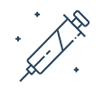
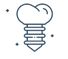

Sorriso Saudável,
Vida Feliz.
Especialistas em Odontologia em Araucária
Com 35 anos de experiência e mais de 13.000 clientes atendidos, oferecemos cuidados dentários de alta qualidade em uma estrutura de luxo.


Cuidados personalizados e sorrisos transformados
Na clínica Odonto Coser, acreditamos na transformação completa do seu sorriso.
Oferecemos tratamentos personalizados, utilizando tecnologias avançadas e equipamentos de ponta para garantir a sua saúde e também a beleza do seu sorriso.
Buscamos compreender as necessidades individuais de cada paciente, oferecemos tratamentos individualizados para resolver as suas dores específicas.
Aqui nosso resultado é duradouro, transformamos o seu sorriso e a sua face, mantendo a sua essência e naturalidade.
Especialidades
Nossa clínica conta com especialistas que atuam em diversas áreas. Seja para harmonizar, embelezar, ou tirar seu mal estar, a Odonto Coser está de portas abertas, sempre pronta para te receber.
-

Harmonização Orofacial
Bichectomia, Toxina Botulínica, Lipo de Papada, Fios de Sustentação, Preenchimento Facial e Labial.
Saber mais -
Facetas e Lentes
Camadas ultrafinas de porcelana ou resina para recobrir manchas, harmonizar o sorriso e fechar diastemas.
Saber mais -

Implantes Dentários
Chega de sofrer com a perda de dentes! Os implantes são a melhor ferramenta para repor dentes, unindo estética e funcionalidade.
Saber mais -
Ortodontia Convencional
Responsável pela correção da posição dos ossos maxilares e dos dentes posicionados de maneira incorreta.
Saber mais -
Clareamento Dental
Trabalhamos com todos os tipos de clareamento: De Consultório (Laser), Caseiro e misto.
Saber mais -
Endodontia (Tratamento de Canal)
Indicado quando o dente sofre algum trauma: cáries profundas, fraturas, inflamação e infecção da polpa.
Saber mais -
Alinhadores Invisíveis
Placas transparentes, estéticas e removíveis que corrigem os dentes dispensando os aparelhos tradicionais.
Saber mais -
Enxertos e Reabilitações
Técnicas modernas utilizadas para ganho em espessura ou altura óssea. Indicado para pacientes com deficiência óssea.
Saber mais -
Tratamento de DTM
Condição que afeta as articulações da boca e os músculos da mandíbula. A DTM é conhecida como dor orofacial.
Saber mais -
Odontopediatria
Especialidade que cuida da saúde bucal de crianças, desde o nascimento até a adolescência.
Saber mais -
Próteses Convencionais
Prótese Total, Parcial Removível, Fixa sobre dente, Fixa sobre implantes e Provisórias.
Saber mais -
Periodontia e Dentística
Prevenção de complicações gengivais e ósseas. Odontologia restauradora focada na estética e função.
Saber mais
Conheça nossa estrutura


Quem somos
Localizada no centro de Araucária, a Clínica Odonto Coser cuida do seu sorriso e da sua saúde desde 1989. Contamos com uma equipe familiar formada por profissionais altamente qualificados, totalmente dedicados ao seu bem-estar.
Nossa estrutura é altamente tecnológica: possuímos um centro cirúrgico para grandes intervenções, raio-x digital, sala com estúdio fotográfico de ponta e mais de 07 cadeiras odontológicas. Além disso, dispomos de uma equipe médica especializada em sedação geral, proporcionando o máximo de conforto nas cirurgias de grande porte.
.webp) Conhecer a Clínica
Conhecer a Clínica
Sorrindo à Toa
Com base nas avaliações do Google — mudamos não só sorrisos, mas vidas inteiras!
Perguntas Frequentes
Consulte nossas condições via WhatsApp, ou agendando uma avaliação aqui na nossa clínica! Falar no WhatsApp
A clínica trabalha com Amil, Sulamerica, Medprev, Solumedi, Uniodonto, Global Saúde e Brazil Dental.
Sim, possuímos estrutura adequada para cadeirantes e pessoas com qualquer dificuldade.